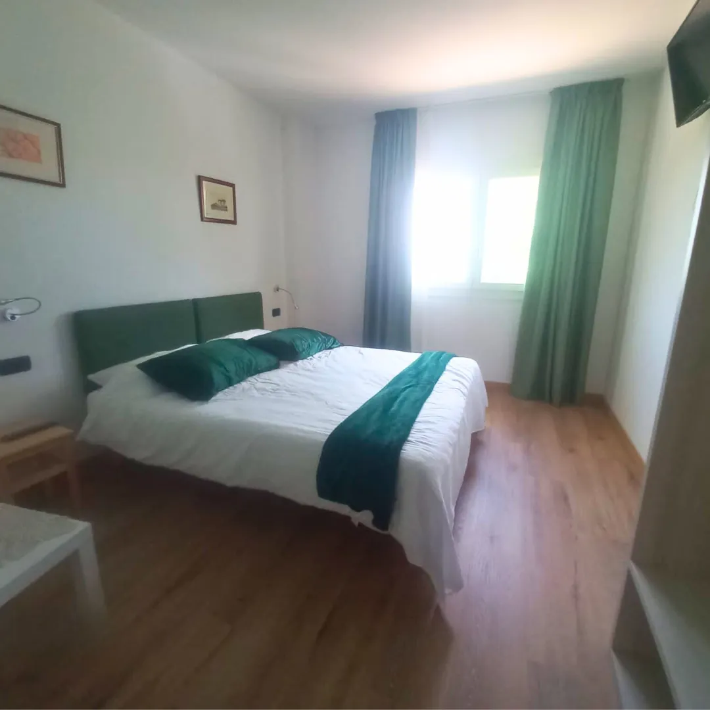
Camere accoglienti
Singole, doppie e familiari, per vacanze, weekend o soggiorni di lavoro.
info@gardafarmverona.com
Agriturismo e sale eventi a Verona, fattoria didattica e sociale a Villafranca.
Un luogo in cui la natura abbraccia l'accoglienza, e ogni spazio, una stanza, un giardino, una sala, diventa un invito alla condivisione, al benessere e a relazioni autentiche.
A Gardafarm la natura non è solo un luogo: è maestra , casa e occasione di incontro .
Imparare dalla natura, crescere insieme.
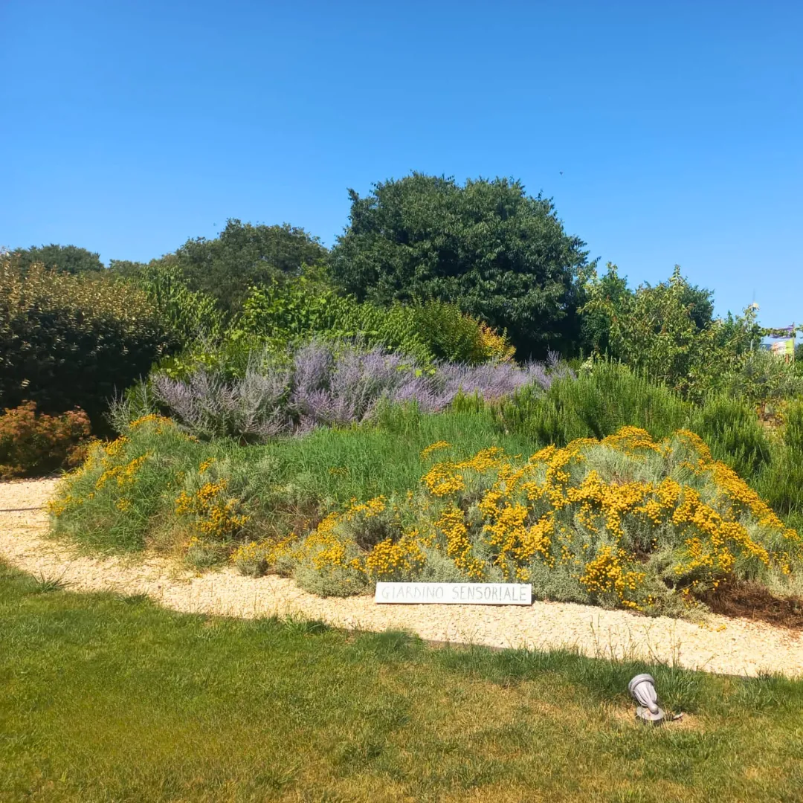
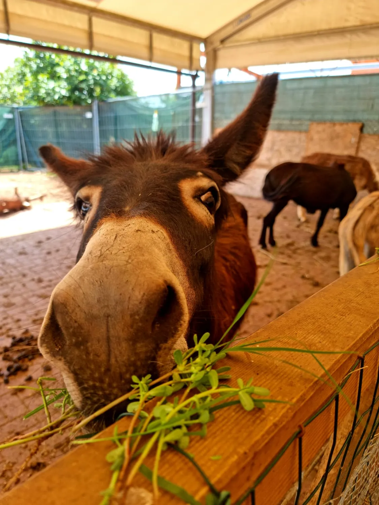
Sede di Verona
Agriturismo e sale eventi
Il luogo ideale per chi desidera un soggiorno immerso nella natura senza rinunciare alla comodità della città. Un punto di partenza per esplorare Verona, il Lago di Garda e la Lessinia.
Spazi interni ed esterni pensati per riposare, ritrovarsi e fare festa.
scorri
Singole, doppie e familiari, per vacanze, weekend o soggiorni di lavoro.
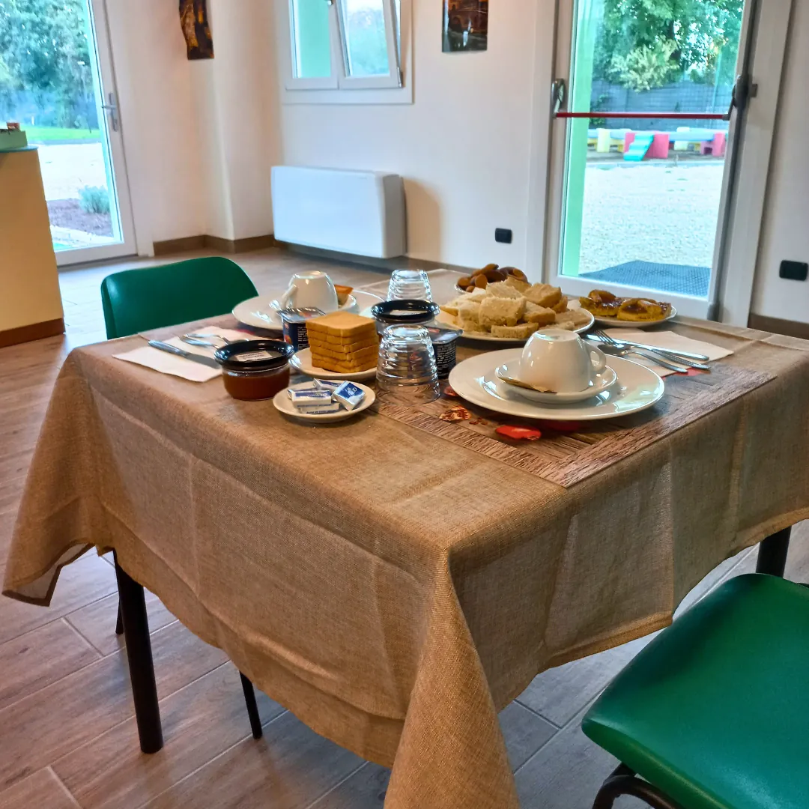
Inclusa per due persone con la camera matrimoniale.
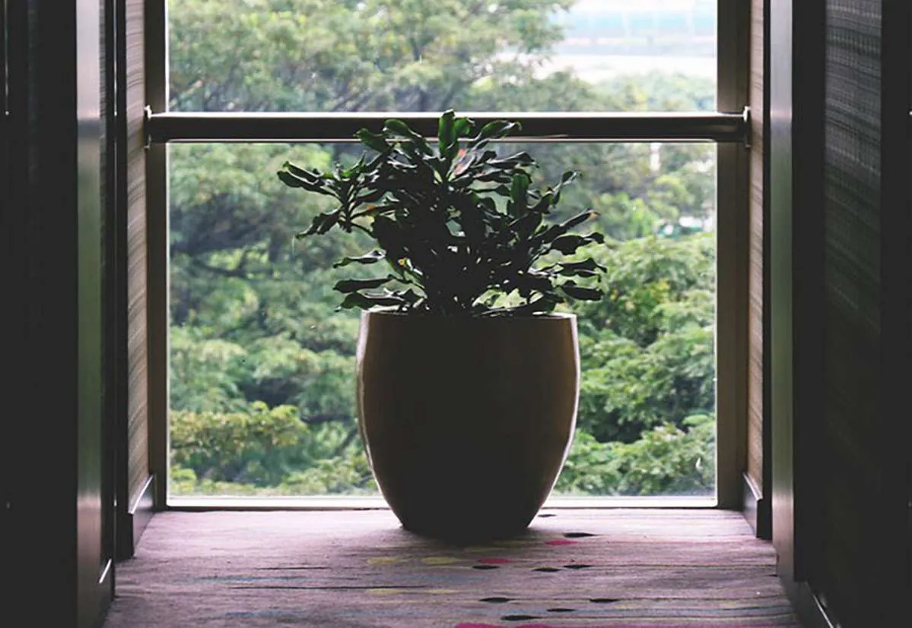
Un'ampia terrazza per rilassarsi all'aria aperta dopo una giornata in città o sul lago.
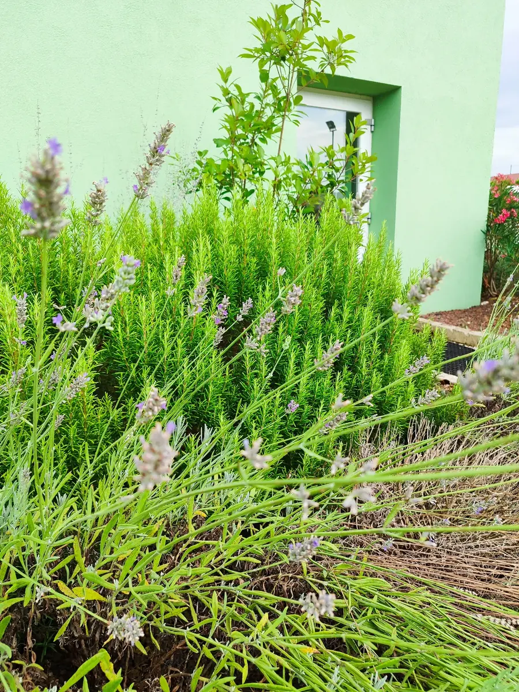
Piante aromatiche e angoli di quiete dedicati al relax.
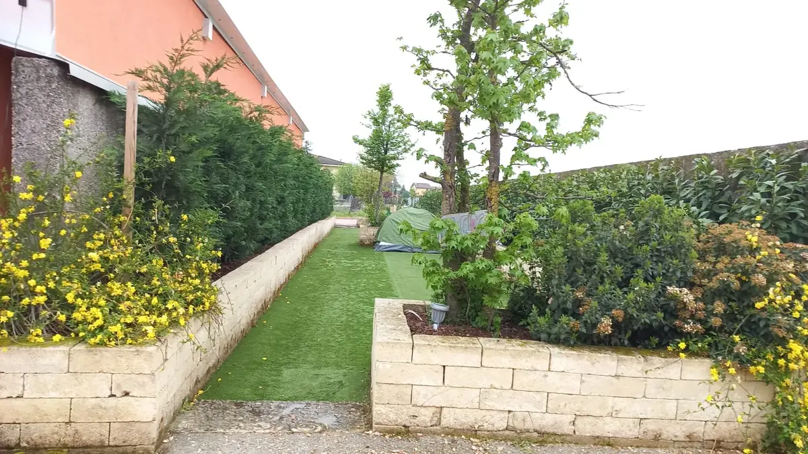
Attrezzata, per momenti conviviali all'aperto.
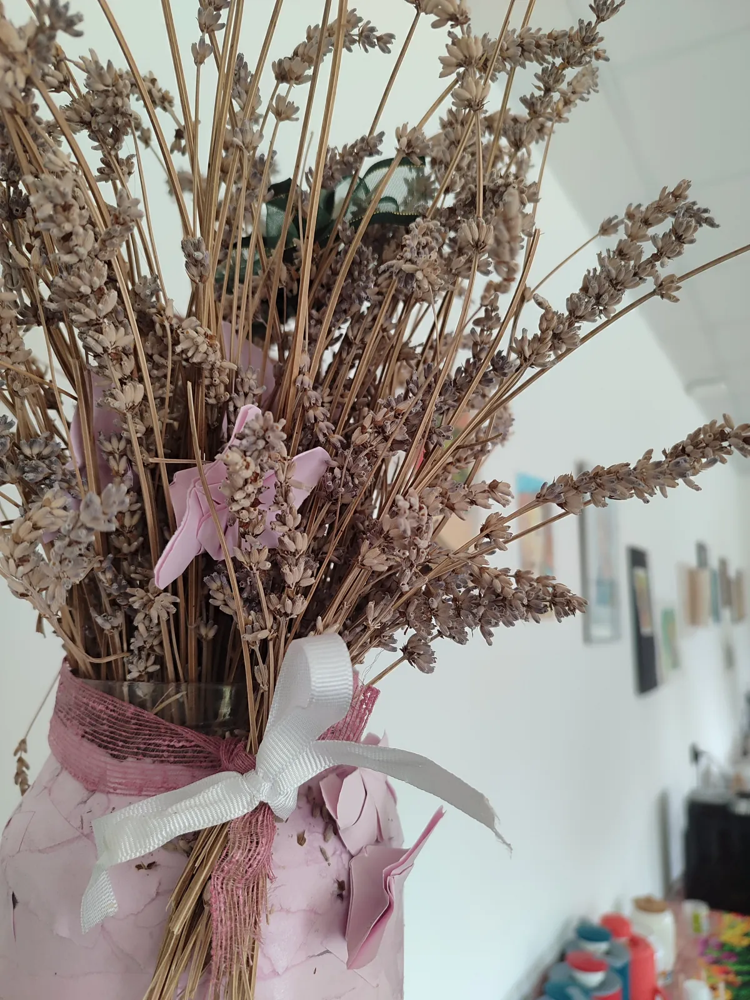
Attività esperienziali per gruppi, su prenotazione.
Arredi essenziali, dettagli rustici e tonalità rilassanti, per un soggiorno che rigenera.
Letto aggiuntivo 15 €. Condizioni speciali per gruppi e per soggiorni oltre le 3 notti. I prezzi possono variare in base alla stagione.
Chiedi un preventivoSpazi versatili e immersi nel verde per eventi privati, incontri aziendali, team building e compleanni. Accessibili, con Wi-Fi e doppi servizi anche per persone in sedia a rotelle. Impianto audio, lavagna, pc e proiettore, allestimenti e buffet su richiesta.
da 130 m²
130 m²
100 m²
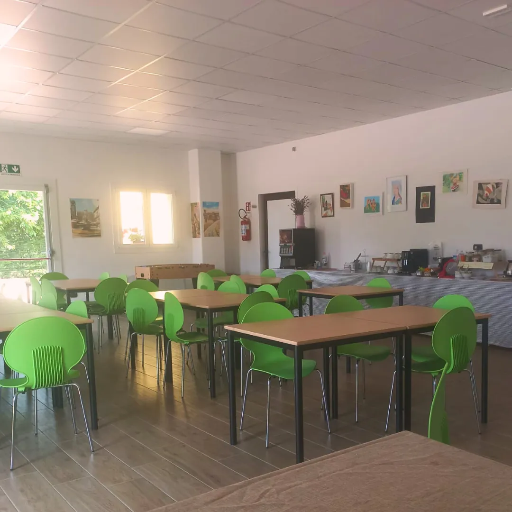
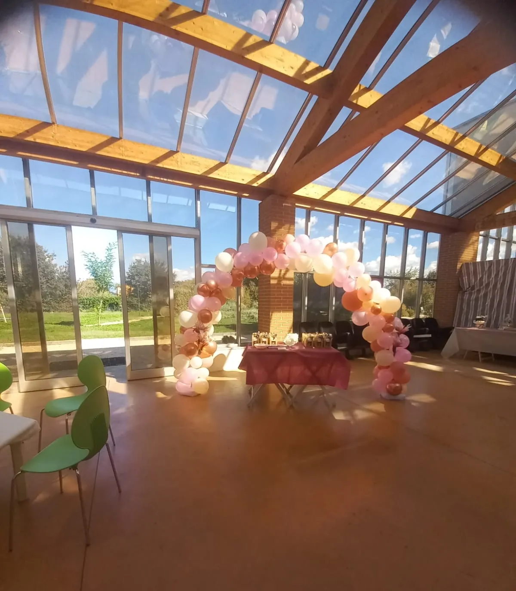
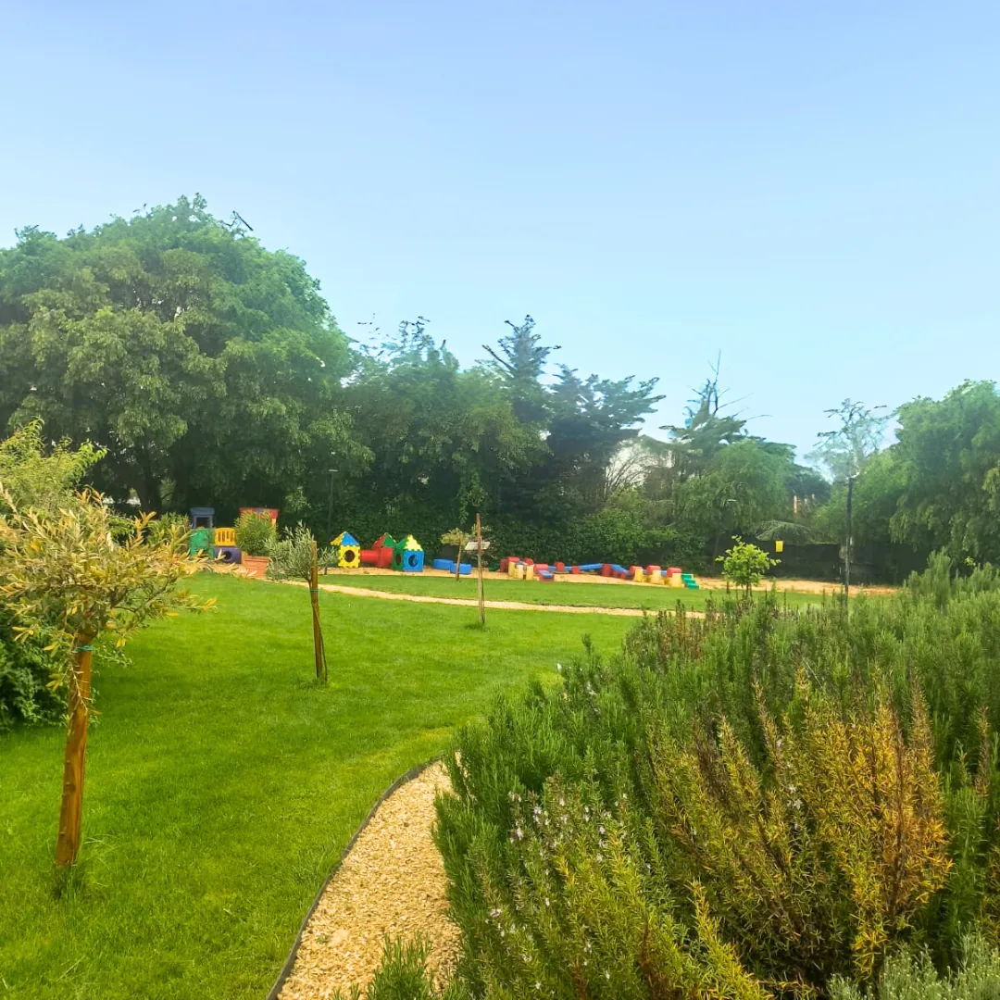
Tutte le stanze sono adeguate alla normativa antisismica, con doppio cappotto termico, serramenti ad alto isolamento acustico e termico e un impianto fotovoltaico da 28 kW. Ambienti accessibili e un ampio parcheggio interno recintato.
Via Gardesane 91/B, 37139 Verona
CIN IT023091B5T99FYF8F, CIR 0239091-AGR-00024
Sede di Villafranca
Fattoria didattica e sociale
Un luogo accogliente e immerso nel verde, pensato per progetti educativi, attività con gli animali ed eventi speciali, in un contesto autentico e rigenerante.
Per imparare facendo, con attività pratiche e coinvolgenti. Ideale per scuole, famiglie, educatori e realtà inclusive.
Proposte ludico-creative e percorsi per il benessere, pensati per valorizzare ogni persona, a ogni età.
Percorsi guidati da professionisti, dove il legame con l'animale diventa occasione di crescita e cura.
Sale e ambienti versatili per laboratori, compleanni, corsi e momenti da condividere nella natura.
Asinelli, caprette, galline, conigli e api diventano compagni di relazione: stimolano fiducia, comunicazione, empatia.
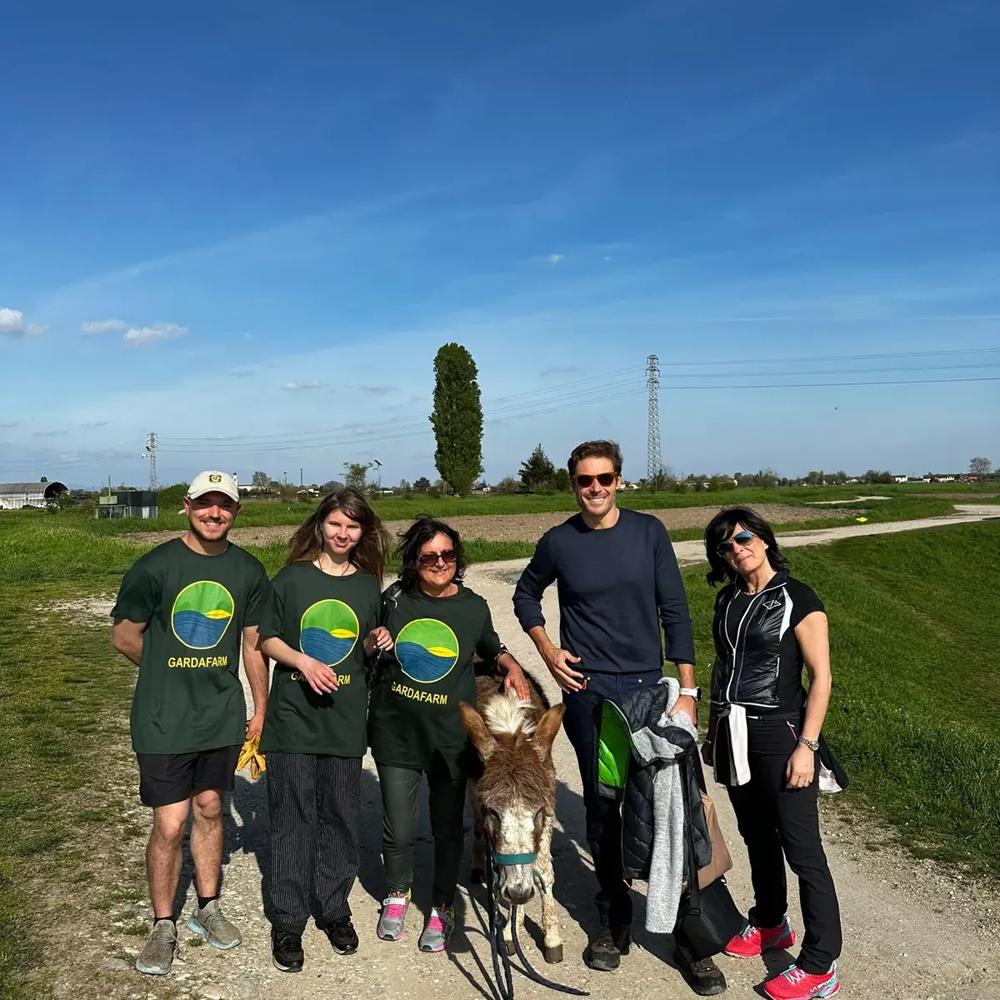
La sede di Villafranca è centro specializzato per gli Interventi Assistiti con gli Animali, riconosciuto dal Ministero della Salute e iscritto al Registro delle Fattorie Sociali del Veneto.
Ogni proposta è progettata con cura, su misura per il gruppo o la scuola, con uno stile coinvolgente e profondamente umano.
Un giorno in fattoria tra stalle, galline, conigli e asinelli: si impara a conoscere gli animali da vicino, ad accudirli e a vivere il ritmo autentico della campagna.
Per gruppi, su prenotazione
Un percorso sensoriale tra alveari, fiori e miele, per scoprire l'importanza delle api per l'ecosistema. Con degustazione e attività su miele, polline e cera d'api.
Per gruppi, su prenotazione
Una camminata lenta e consapevole in compagnia degli asinelli, tra vigneti, oliveti e frutteti biologici, per ascoltare la natura e connettersi con questi animali dolci ed empatici.
Per gruppi, su prenotazione
Un laboratorio con erbe aromatiche, profumi e colori: si scoprono le piante, le loro proprietà e i loro usi, e si prepara un piccolo prodotto da portare a casa.
Per gruppi, su prenotazione
Raccolta e lavorazione della lavanda, bouquet garni, laboratori con il miele e il sale aromatico, attività sensoriali e stagionali tra vino, frutta e orto.
Per scuole e gruppi, su prenotazione
Mani in pasta, arte e collaborazione: proposte su misura per gruppi aziendali e privati che vogliono fare squadra divertendosi, dalla cucina condivisa all'arte partecipativa.
Per gruppi, su prenotazione
Un sentiero accessibile a tutti che parte proprio dalla sede di Villafranca e unisce sostenibilità sociale, rispetto dell'ambiente e benessere fisico e mentale.
Accesso libero e gratuito, in qualsiasi momento
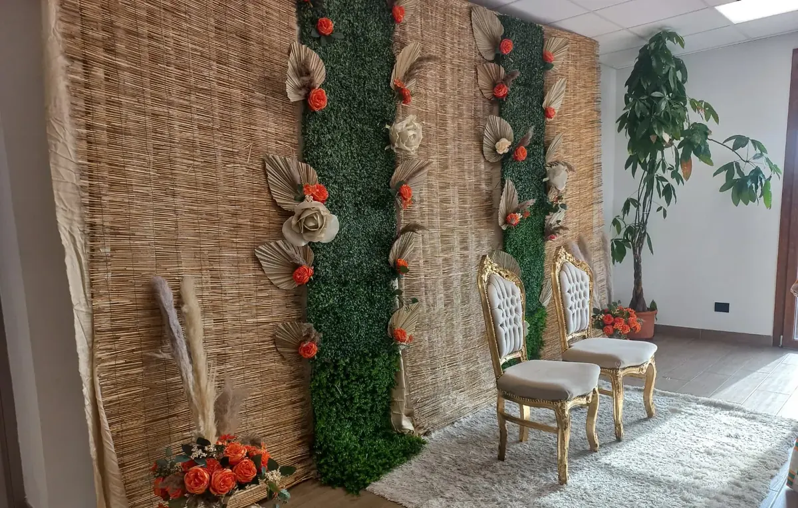
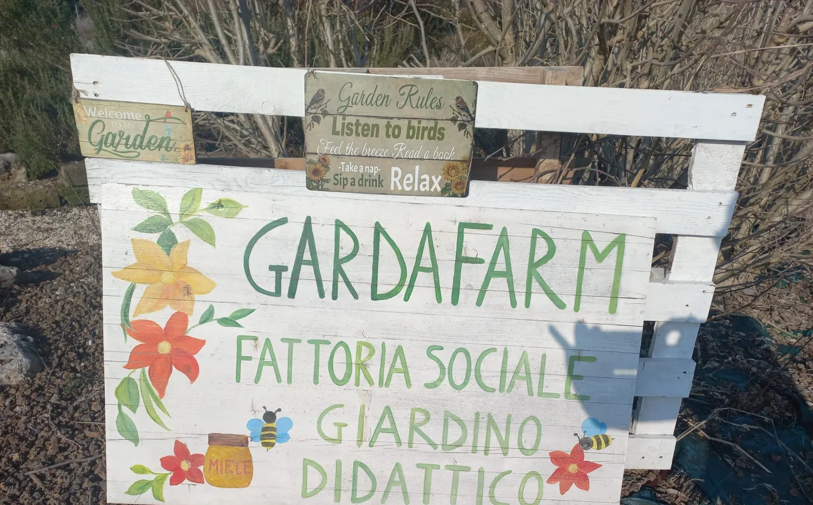
Feste private e compleanni, per bambini e adulti, corsi e laboratori, giornate esperienziali per gruppi o aziende, eventi educativi e ricreativi.
Via Paroline 7, 37069 Villafranca di Verona
La mappa non si è caricata. Usa i pulsanti Indicazioni per aprire il percorso.
Due sedi, 19 km di strada fra l'una e l'altra.
Via Gardesane 91/B, a 10 minuti dal centro storico e 20 dal Lago di Garda.
IndicazioniVia Paroline 7, nella campagna di Villafranca di Verona. Il sentiero del campione parte da qui.
Indicazioni1988
Dal profondo amore per il verde nasce l'azienda florovivaistica Strambini Marco, dedicata alla realizzazione e alla cura di giardini e impianti di irrigazione.
Da allora
Con radici profonde nella tradizione contadina, convinti che il benessere fisico e mentale nasca anche dal contatto autentico con la terra, gli alberi e gli animali.
Oggi
Un luogo dove chiunque possa vivere il verde nella sua forma più genuina, scoprire le bellezze del territorio e riscoprire il piacere di stare bene grazie alla natura.
Scriveteci per un soggiorno, un laboratorio con la scuola o una festa: vi rispondiamo con una proposta su misura.
info@gardafarmverona.com